Refraction
Doing refraction is fairly simple under BMRT. Just use the refract() call and then trace the rays. See the BMRT examples/glass.sl shader for more info (actually the shader uses, fresnel(), but more about that later).Under prman, there are two ways to do refraction. Both ways mean calling the refract().
Method 1: Use BMRT to trace the refraction rays. This is done by having prman call BMRT to trace the rays for it.
Method 2: Create an environment map containing the objects that are to be refracted. Then use the results from the refract() call to lookup into the environment map. This is the typical method for doing refraction under prman.
The code generally looks something like:
vector Rfrdir = refract(NI, Nf,refractIndex); color Cr = color environment(mapname, Rfrdir); |
 Refract RIB
Refract RIBThis example needs: TL_rglass.sl, TLpplastic.sl, and grid2.tiff(NOTE: the tiff file will need to be converted to a prman texture-map, before it can be used in the example RIB. Also, the RIB expects this map to be be named grid2.tx.).
Reflection
What goes for refraction, pretty much goes for reflection: reflect()
It is fairly simple to do under BMRT;
prman can call BMRT to do ray-trace reflection rays for it;
prman reflection can be sort of hacked by using an environment map.
The code generally looks something like:
vector Rfldir = reflect(NI, Nf); color Cfl = environment(mapname, Rfldir); |

The above image was created using the RIB above. The only change was the line:
Surface "TL_rglass" "mapname" "/tmp/geo1.env" "refractIndex" .8 "Kd" 0 "Kt" 2 "Kr" 1 was changed to: Surface "TL_rglass" "mapname" "/tmp/geo1.env" "refractIndex" .8 "Kd" 0 "Kt" 0 "Kr" 1
If the reflective surface is flat (like in a table), then there is a slightly less costly method of doing reflections in prman. See Application Note #6: "Simulating Reflections In A Flat Surface".
 Fresnel
Fresnel
The fresnel() is one of the more obscure and more understood of the SL functions. Many shaders writers have gone on for years and have never felt that they had much use for it.
Hopefully, after reading this you will feel that you can never live without it.
I won't get into the physics of fresnel nor get into explaining exactly how it works. But will instead give a few examples to give you a few pointers on using it.
There are already many references that give more of the what and why. For example:
http://www.graphics.cornell.edu/~westin/fresnel.html 3D Computers Graphics (2nd edition) Alan Watt p. 286, 287; 117 Advanced RenderMan Apodaca and Gritz pp. 218-221Most important of all, the fresnel helps you to get away from the plastic look that most CG images have. It gives you the capability to give your objects a sense of a little more complexity. Also it can be used to give your objects a sense of rim lighting without the need of extra lights.
Genearlly the images that I create tend to be more for their looks than in their physical correctness. Otherwise I would most of the time I would care that the Index of Refraction for water is 1.3; most glasses around 1.4-1.6; etc.
So I tend to use values 1 < ior < 2. Also I will frequently punch up many of the lighting scalers like Kr.
See for example:
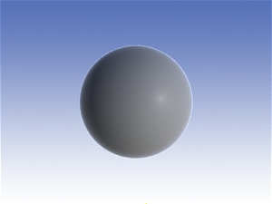
Notice how it looks like this object has rim lighting and that it fits into the background that much better. This RIB can be found at: TLFresnelPlastic
The following images are based off of this common RIB file. The only differences shader parameter tweeks and are noted with each image. This example makes use of the following: TLFresnelPlastic.sl, TLconstantMap.sl, l_uber.sl, and grid.tif. For convience everything has been tar'ed up into: fresnel.tgz
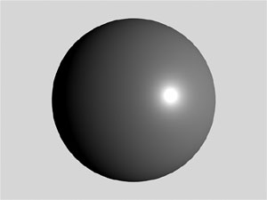 Kr 0 ior 0. Here is our base example with the normal plastic look. See how boring that it looks compared to the previous example?
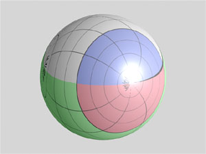 Kr 0.5 ior 0. Same as before but now the reflection is turned on.
Now we will set Kr to 1.3 and iterate 10 times starting with an ior of 1.1 and finishing with ior of 2.
IOR 1.1 - 2.0
| 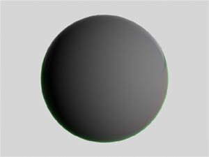 |
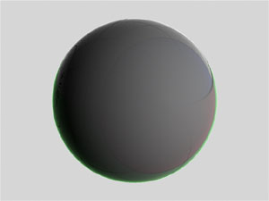 |
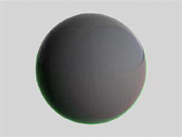 |
| 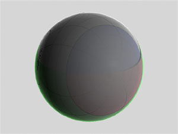 |
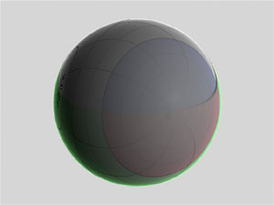 |
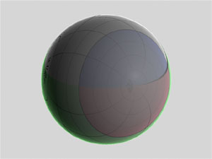 |
| 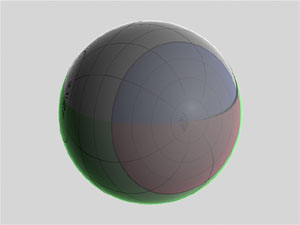 |
||
| 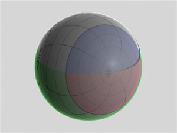 |
The RMR is Copyright © 1995-2005 Tal L. Lancaster all rights reserved
Last modified: Fri May 17 21:45:21 PDT 2002